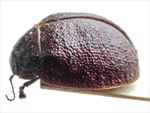
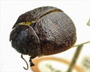
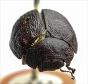
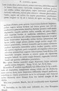

Click on images to enlarge
{kind=link}

Fig. 1. Paropsis alticola type specimen, lateral view
{kind=link}

Fig. 2. Paropsis alticola type specimen, oblique view
{kind=link}

Fig. 3. Paropsis alticola type specimen, anterior view
{kind=link}

Fig. 4. Paropsis alticola, description
Name
Paropsis alticola Blackburn, 1896
Corresponds to
The female type specimen appears quite similar in size and general appearance to Ta15, a species that is relatively commonly found in the area indicated by by Blackburn for the distribution of T. alticola. However, Ta15 has a scutellum that is at most lightly punctured, and its HCE/BL is less than 19%, compared with the 22.5% for the alticola type specimen.
Diagnosis and Notes
Blackburn (1896) deals with T. alticola as part of his 'subgroup ii' (i.e., those species without "strongly marked characters", whose greatest height is not or scarcely in front of the middle of the elytral margin and whose elytra are depressed under the humeral callus). Within that group, he characterises it as:
A. Inner edge of humeral callus distinctly nearer to lateral margin of elytra than to suture;
BB. Sides of prothorax not at all explanate;
C. Elytra not having a well defined transverse wheal-like ridge;
DD. Form less wide [not nearly circular], elytra not wider than long;
EE. Prothorax widening from apex almost to base; base much wider than front margin;
F. Puncturation of elytra not particularly fine;
GG. Elytral verrucae not as in tatei [i.e., not large, scarcely elevated, isolated, very nitid and black];
H. Surface of elytra (disregarding the verrucae) only moderately rugulose;
I. The elytral verrucae inconspicuous, darker than derm and tending to be transversely elongated;
J. The humeral calli in their normal positions [i.e., not exceptionally near lateral margins];
KK. Upper outline of elytra (viewed from the side) somewhat flattened.
Blackburn, in the notes to his description, compares it to T. punctata, indicating that it is likely close, but differs in having "a considerably more depressed form".
Type specimen
Location: BMNH Label data: /“Type” (red-bordered circle)/ “1043 Ad. T”/ “Blackburn coll. 1910-236.”/ “Paropsis alticola Blackb.” (specimen is on card)/.
Female; Size: 8.35 (L) x 6.15 (W) x 3.5 (H) mm; A-A: 1.38 mm; HCE = ~22.5% BL (obtained by measurement from lateral view in photo).
An all brown species, the elytra have a scatter of small, inconspicuous (scarcely darker than the derm) verrucae that tend to line up in longitudinally-oriented series.
Original description
Translation of original description (Figure 4) by ChatGPT, 04/2026:
Broadly oval (almost subcircular), rather less convex, the greatest height (seen from the side) situated about the middle of the elytral margin; fairly shining; beneath black-pitchy; above (including antennae and legs) reddish, the elytra more or less obscurely pitchy-shaded. Head rather densely but scarcely roughly punctulate. Prothorax broader than long in the ratio 2⅔ : 1, widened from the apex to well beyond the middle, distinctly transversely impressed behind the anterior margin; densely, somewhat roughly but not very strongly punctured (towards the sides the punctures coarse and little if at all confluent); sides strongly rounded and not at all flattened; posterior angles absent. Scutellum rather dull, doubly punctured (with stronger punctures scattered and finer ones close together). Elytra rather distinctly depressed beneath the humeral callus (and transversely impressed behind the base), densely and rather strongly punctured in somewhat serial arrangement (towards the sides much coarser, posteriorly denser and somewhat finer); furnished with a few small and rather indistinct verrucae irregularly arranged; interstices anteriorly moderately, posteriorly rather strongly rugulose. Marginal portion rather narrow and well separated from the disc by a groove narrowly interrupted before the middle; inner margin of the humeral callus scarcely much farther from the suture than from the lateral margin of the elytra. Basal ventral segment rather sparsely and moderately strongly punctured. Male somewhat more depressed than the female; its antennae slightly less elongate. Length 3⅕–4⅕ lines [~6.8-8.9 mm]; width 2⅔–3½ lines [5.1-7.4 mm].
References
Blackburn, T. 1896, "Revision of the genus Paropsis. Part I", Proceedings of the Linnean Society of New South Wales, vol. 21, no. 4, 637-693 (page 672).
Copyright © 2026. All rights reserved.